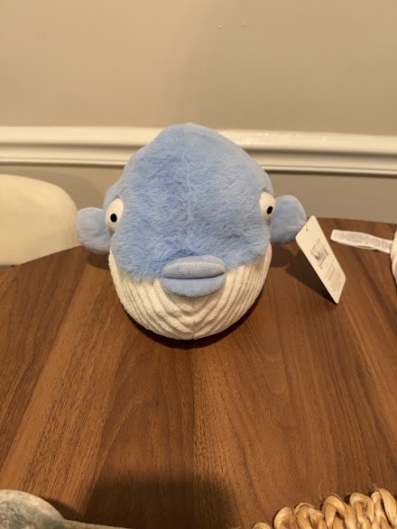
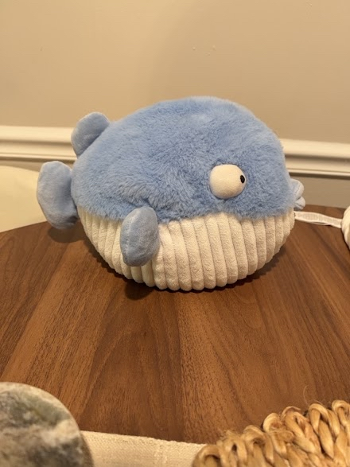
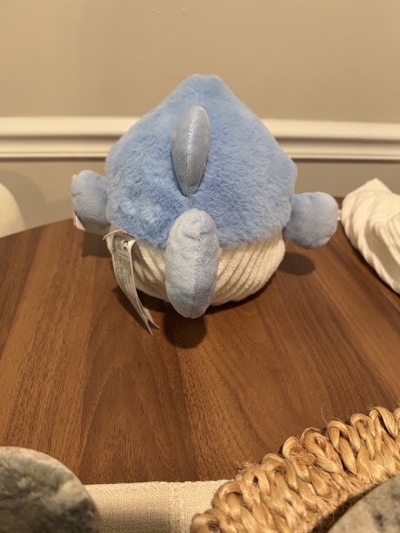

The Government of All Things Adorable presents
Some families are meant to be.
Dana Garcia & Jonathan Lopez, your application to become the official parents of one extremely lovable whale is now ready for review.

ADORABLE✦
Exhibit A · The adoptable individual
MEET THE APPLICANT
A whale of a personality.

Bubbles Garcia
Small in size. Enormous in emotional importance. Seeking two responsible adults with a dependable source of snacks and a willingness to pay child support.
- DATE OF BIRTH
- AUGUST 30, 2026
- SPECIES
- WARMIES WHALE
- CURRENT OCCUPATION
- INTERNATIONAL BUSINESS MAGNATE
- ANNUAL INCOME
- $30,000,000 (PRE-TAX)
- PROPOSED MOTHER
- DANA GARCIA
- PROPOSED FATHER
- JONATHAN LOPEZ A.K.A. “THE MEXICAN”

Explore Bubbles' adventures ↓
Imagined adventures · AI-generated illustrations, separate from the original adoption photographs.
Adventure photographs are awaiting processing by the Department.
MANDATORY PARENT SCREENING
Are you whale-qualified?
01. Are you financially prepared to support a whale who has never worked a day in his life?
Congratulations. You are suspiciously qualified.
Following a comprehensive review that lasted approximately 0.8 seconds, Bubbles is willing to proceed with your application.
Read the official contract →OFFICIAL ADOPTION DOCUMENTATION
The fine print.
THE DEPARTMENT OF WHALE AFFAIRS
✳OFFICE OF ADOPTION SERVICES
Official Adoption Agreement
Between the Former Guardian and the Prospective Parents of Bubbles
This solemn adoption agreement establishes that Dana Garcia and Jonathan Lopez (hereafter, “The Parents”) accept the following responsibilities toward Bubbles (hereafter, “The Firstborn”). The Former Guardian shall retain the honorary title of Uncle and Supreme Whale Inspector.
THE FINAL FORMALITY
Make it official.
By signing, you acknowledge that you have read (or confidently skimmed) your parental responsibilities and are ready to give Bubbles a loving forever home.
✳
OFFICIALLY A FAMILY
The whale is yours.
Dana and Jonathan, congratulations on your new firstborn. Bubbles couldn't have picked a better family. May your home be full of laughter, love, and one exceptionally round whale.
Save the PDF as your permanent keepsake. Signatures never leave this device.